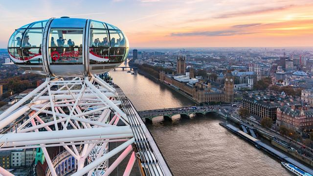

Londyn
Londyn (ang. London) – stolica Anglii i Wielkiej Brytanii, największe miasto królestwa, położone w jego południowo-wschodniej części nad Tamizą. Jest trzecim co do wielkości miastem Europy, po Moskwie i Stambule; jest jednym z większych miast świata zarówno w skali samego miasta, jak i całej aglomeracji. Liczba mieszkańców Londynu (w granicach tzw. Wielkiego Londynu) wynosi ok. 8,4 mln. (2013 r.) na obszarze 1572 km²; cała zaś aglomeracja londyńska, łącznie ze wszystkimi przyległymi miejscowościami w 2015 liczyła prawie 14 milionów mieszkańców[2][3] (obszar tzw. metropolia). Około 20% mieszkańców pochodzi z Azji, Afryki i Karaibów. Współczesny Londyn jest drugim największym centrum finansowym świata. Dokonuje się tam 30% światowego obrotu walutami i 40% światowego obrotu euroobligacjami. Swoje główne siedziby ma tam kilkaset banków oraz wielkie towarzystwa ubezpieczeniowe i inwestycyjne. Jest także ogromnym ośrodkiem medialnym.
opis oferty
Śniadanie. Przejazd do centrum miasta. Rejs po Tamizie do Tower of London – jednej z najpotężniejszych fortec średniowiecznej Europy. W murach Tower znajdowały się więzienie i arsenał, swoją siedzibę miały tu również mennica królewska oraz archiwum. Można tu również zobaczyć skarbiec królewski z klejnotami koronnymi. Znajduje się tu jeden z największych diamentów świata – 530-karatowa „Pierwsza Gwiazda Afryki”. W pobliżu twierdzy znajduje się jedna z najsłynniejszych atrakcji turystycznych Londynu – Tower Bridge – bez wątpienia najsłynniejszy most Wielkiej Brytanii. Zwiedzanie Westminster Abbey – miejsca koronacji i pogrzebów królów Anglii, obok katedry św. Pawła i Canterbury najważniejszej świątyni anglikańskiej. Opactwo słynie z kaplicy RAF-u oraz oryginalnego tronu koronacyjnego monarchów brytyjskich. Tron ten po raz pierwszy służył Edwardowi I w 1308 r. Na uwagę zasługuje również Zakątek Poetów, który skrywa groby Chaucera, Drydena i Tennysona. Przejście pod Buckingham Palace, który jest oficjalną rezydencją królowej. Warto przyjrzeć się słynnej fasadzie, a szczególną uwagę zwrócić na maszt wieńczący dach pałacu. Jeśli wisi na nim sztandar oznacza to, że królowa jest obecna w pałacu. Czas wolny. Powrót do hotelu. Nocleg.
| Data | Cena | Ilosc gwiazdek hotel |
|---|---|---|
| 12.03.2020 | 12999pln | 5 |
| 15.03.2020 | 17000pln | 4 |
| 18.03.2020 | 18000pln | 4.5 |